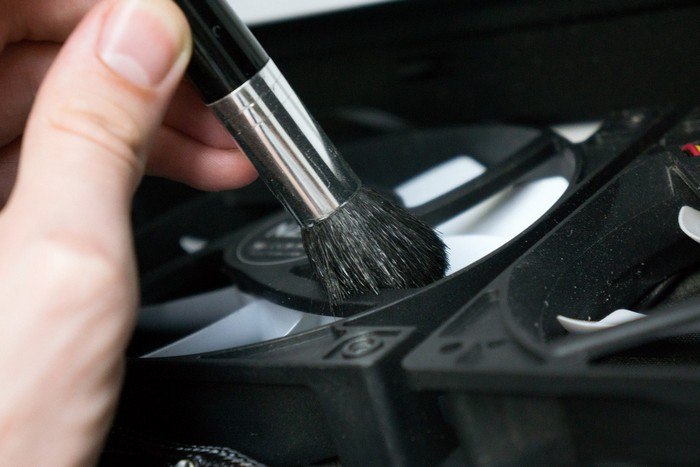
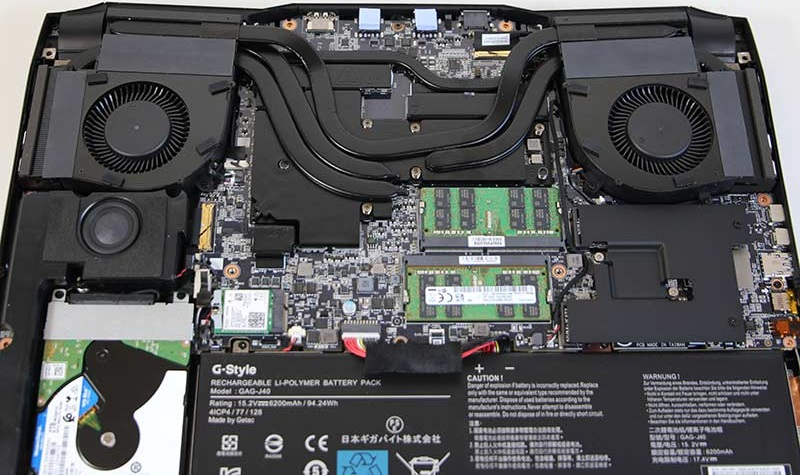

Sucia
Nuestro PC, sea portátil o de escritorio, cogerá suciedad de forma inevitable con el transcurso del tiempo. Solamente aquellos que estén en recintos totalmente cerrados como servidores, estarán libres de la suciedad.
El polvo es uno de los grandes enemigos de los ordenadores, ya que crean una capa en disipadores y ventiladores que evitan el intercambio de calor con el aire ambiente. Incluso pueden provocar cortocircuitos en los componentes si la suciedad es muy grande o hay humedad en el ambiente.
Herramientas que necesitamos para limpiar nuestro PC
- Aire a presión: con aire a presión podremos retirar la capa más gruesa de polvo de los componentes y el chasis sin desmontar nada. Existen spray de aire comprimido que vienen genial para los recovecos, pero se gastan muy rápido. Si tenemos en casa un compresor sería lo ideal, ya que a una presión de 2 a 3 bar no dañaremos ningún componente y no tendrá límite de uso. Una aspiradora también es una opción factible.
- Brochas o pinceles: podemos sustituir el aire por brochas, ya que también llega a todos los huecos y no habrá peligro de electricidad estática ni rotura de componentes.
- Destornilladores: un kit de destornillares es la herramienta ideal no solo apra un PC sino para cualquiera casa. Y se tenemos distintas brocas disponibles mejor que mejor.
- Alcohol isopropilico: también llamado isopropanol, añadido al paño de fibras sirve para retirar toda la capa de polvo de componentes electrónicos como el IHS de la CPU.
Limpieza superficial sin desmontaje
Advertencia:
Recuerda que realizas todo este proceso bajo tu propia responsabilidad. La posibilidad de que provoques estragos es extremadamente baja, pero existe. No nos responsabilizamos si cometes algún error.
Si es tu primera vez limpiando tu ordenador, se recomienda una limpieza superficial, ya que es facil de hacer y es mantenimiento mas que suficiente si su PC relativamente limpio.
Solamente necesitaremos abrir nuestro chasis, a ser posible la zona frontal si es desmontable y las chapas laterales. Lo ideal sería utilizar aire comprimido para retirar todo el polvo, desde arriba hacia abajo, del chasis y componentes. El polvo se irá quedando en las esquinas y recovecos, así que debemos efectuar una revisión lo más completa posible para eliminar todo lo que podamos.
La zona por detrás de las aspas de los ventiladores será la más sucia, así como las aletas de los disipadores. Un elemento que nos sorprenderá la cantidad de porquería que tiene es la fuente de alimentación, y esta sí que necesita aire para su limpieza, ya que si la desmontamos perderá la garantía, además que muchas veces no es fácil hacerlo. 
Con la brocha podemos dar el repaso final, ya que una pequeña capa de polvo más adherida a la PCB y elementos no se podrá retirar con aire.
Limpieza de ventiladores y disipadores completa
Si la computadora se ve en muy mal estado y la cantidad de polvo y mugre es demaciado elevada podemos dar una primera limpieza general como en la solucion anterior, para así desmontar los componentes con facilidad y al menos un poco más limpios.
Primero se deberian retirar todos y cada uno de los componentes con refrigeración, por ejemplo, la tarjeta gráfica, el disipador de CPU , los ventiladores de chasis y la fuente de alimentación. La placa base la podremos dejar instalada, ya que esta se puede limpiar con una brocha sin necesidad de retirarla.
Componente a componente iremos limpiando cuidadosamente los disipadores. Las carcasas de plástico quedarán relucientes con alcohol y el paño, mientras que los disipadores aleteados con aire y un pincel largo harán lo propio. Muy recomendable es retirar el ventilador del disipador principal, ya que ahí se almacenan una cantidad ingente de polvo.
Limpieza del disipador
Justo como antes, daremos una primera pasada con el pincel para quitar los restos del polvo. Habrán restos muy sólidos como para removerlos de esta manera, así que utilizaremos el aire comprimido. Probad a usar palillos para desatascar las rendijas de toda obstrucción de polvo.
Limpieza de la tarjeta grafica
Existe una gran variedad de ensambladores y modelos en el mercado cada uno es distinto y tiene su propia forma de abrir la tarjeta gráfica. Vamos a repasar un proceso que suele ser similar en la mayoría de tarjetas gráficas, pero existen diferencias entre muchos modelos, pero debes tener en cuenta que tu modelos de tarjeta grafica puede ser diferente. Te recomendamos que te apoyes con algún vídeo de desmontaje para tu modelo exacto.
Lo primero que vamos a hacer va a ser extraer exclusivamente los tornillos que están soportando la carcasa de la tarjeta gráfica que tiene los ventiladores. Se diferencian de los que soportan el disipador porque son los que habría que retirar para sacar el backplate, mientras que en el caso de los tornillos correspondientes al disipador no tienen nada que ver con el backplate. En otras tarjetas gráficas saldría todo junto. Una vez sacados esos tornillos extraemos cuidadosamente la carcasa con los ventiladores, acordándonos de desconectar su conector antes de nada.
Ahora solo queda dar una primera pasada con el pincel para quitar los restos del polvo. y repasar con aire comprimido para terminar la limpieza. Una vez hayamos terminado, es turno de volver a colocar los componentes uno por uno hasta que quede igual que estaba. Podréis hacer fotos previamente para luego no equivocaros en las conexiones
Limpieza de portatil
En el caso de portátiles, la limpieza la tendremos que efectuar solamente desmontando la placa inferior del equipo. 
Esto debe realizar si estamos seguros de no perder la garantía del equipo y de tener los elementos adecuados. Mucho cuidado con hacer palanca en los bordes de la carcasa porque podríamos doblarla o romperla. Deberíamos de ayudarnos de una ventosa al estilo Smartphone para retirar dicho elemento.
La desventaja de un portátil es que el sistema de refrigeración está completamente integrado en el hardware. Así que deberíamos limitarnos la limpiar la superficie con una brocha o trapo, así como utilizar aire a presión para los ventiladores y heatpipes